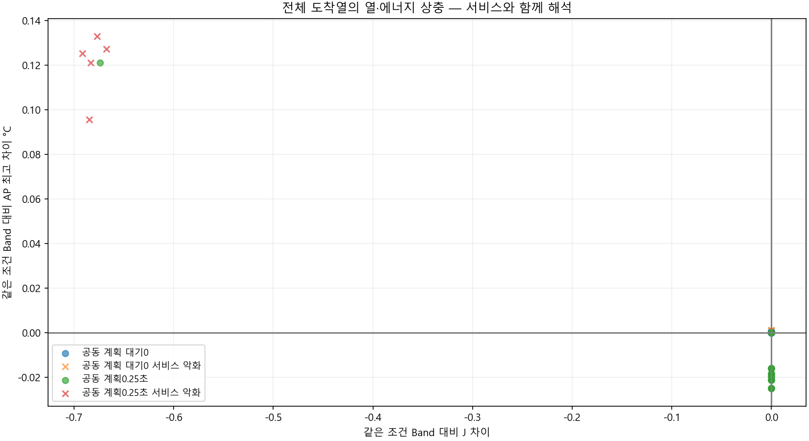
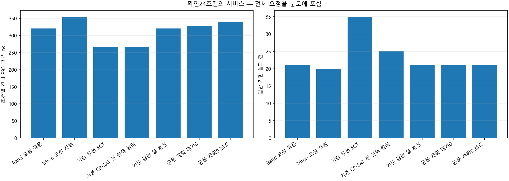
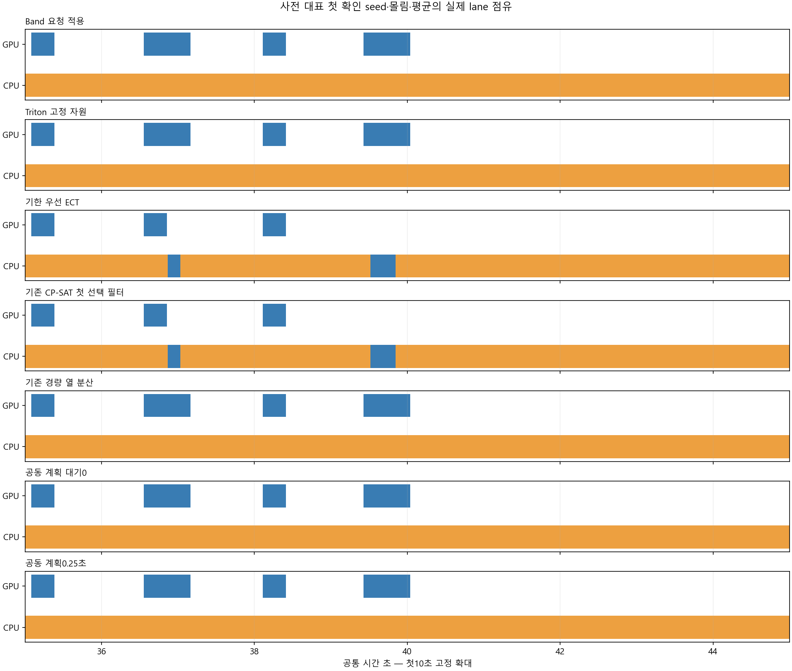
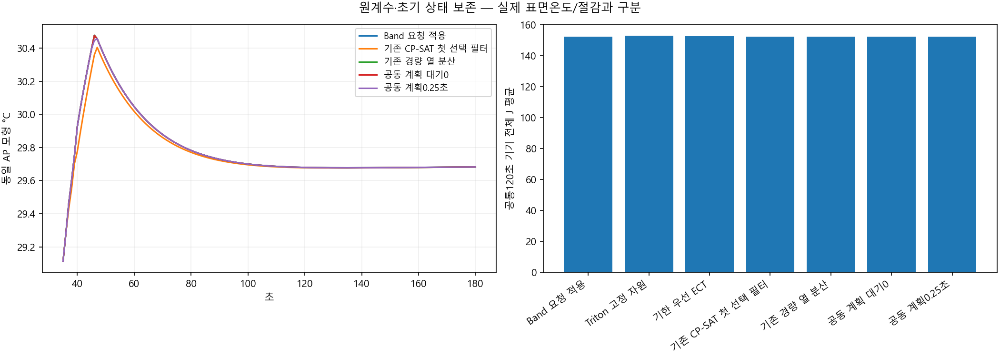
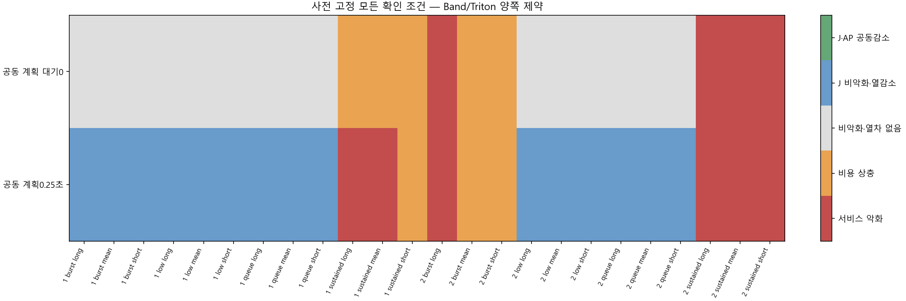

현재 도착 창4 · 과업내 EDD·호환성 · 최대72계획 중8선별 · 전체 현재큐의 J/AP·서비스검사 · 첫 선택 실행 후 재계획.
개발 선택: None, 확인 적격: False. 물리적 절감이나 실제 표면온도 우위가 아닙니다.
설계·판정·한계 · 전체 확인 CSV · 계획·실제 선택 · 대기 제거
| 규칙 | 판단 차이 |
|---|---|
| Band 요청 적용 | 원 Band 요청 순위·자원 배정 |
| Triton 고정 자원 | 원 고정 자원 규칙 |
| 기한 우선 ECT | 기한 순서·5단계 ECT |
| 기존 CP-SAT 첫 선택 필터 | 현재4요청 J계획·첫 행동 AP필터 |
| 기존 경량 열 분산 | 단건/병행/대기·기존 경량 예측 |
| 공동 계획 대기0 | 과업내EDD·순서/자원 공동 계획·전체 J/AP검사 |
| 공동 계획0.25초 | 같은 공동 계획·일반 유휴1구간·누적0.25초 |
| 정책 | 완료 | 예정 | 긴급 실패 | 일반 실패 | P95 평균 ms | J 평균 | AP 평균 | 양 기준 대비 열감소 | 공동감소 |
|---|---|---|---|---|---|---|---|---|---|
| Band 요청 적용 | 1584 | 1584 | 0 | 21 | 320.61763 | 152.2811 | 30.865644 | 0 | 0 |
| Triton 고정 자원 | 1584 | 1584 | 0 | 20 | 355.0863 | 152.73737 | 30.906097 | 0 | 0 |
| 기한 우선 ECT | 1584 | 1584 | 0 | 35 | 265.92404 | 152.39376 | 30.823746 | 0 | 0 |
| 기존 CP-SAT 첫 선택 필터 | 1584 | 1584 | 0 | 25 | 265.92404 | 152.38454 | 30.826805 | 0 | 0 |
| 기존 경량 열 분산 | 1584 | 1584 | 0 | 21 | 320.61763 | 152.2811 | 30.860519 | 6 | 0 |
| 공동 계획 대기0 | 1584 | 1584 | 0 | 21 | 327.16975 | 152.2811 | 30.865858 | 0 | 0 |
| 공동 계획0.25초 | 1584 | 1584 | 0 | 21 | 339.89567 | 152.1112 | 30.883222 | 15 | 0 |
| seed | 부하 | 문맥 | 후보 | 판정 | Band J 차이 | AP 차이 | P95 차이 ms | 일반 지연 ms |
|---|---|---|---|---|---|---|---|---|
| 815020101 | low | mean | Triton 고정 자원 | 서비스 악화 | 0.28555104 | 0.049418846 | 137.8747 | 0 |
| 815020101 | low | mean | 기한 우선 ECT | 비악화·열차 없음 | 0 | 0 | 0 | 0 |
| 815020101 | low | mean | 기존 CP-SAT 첫 선택 필터 | 비악화·열차 없음 | 0 | 0 | 0 | 0 |
| 815020101 | low | mean | 기존 경량 열 분산 | J 비악화·열감소 | 0 | -0.016013511 | 0 | 55.555556 |
| 815020101 | low | mean | 공동 계획 대기0 | 비악화·열차 없음 | 0 | 0 | 0 | 0 |
| 815020101 | low | mean | 공동 계획0.25초 | J 비악화·열감소 | 0 | -0.016013511 | 0 | 55.555556 |
| 815020101 | low | short_context | Triton 고정 자원 | 서비스 악화 | 0.26363747 | 0.048042805 | 130.42855 | 0 |
| 815020101 | low | short_context | 기한 우선 ECT | 비악화·열차 없음 | 0 | 0 | 0 | 0 |
| 815020101 | low | short_context | 기존 CP-SAT 첫 선택 필터 | 비악화·열차 없음 | 0 | 0 | 0 | 0 |
| 815020101 | low | short_context | 기존 경량 열 분산 | J 비악화·열감소 | 0 | -0.016097021 | 0 | 55.555556 |
| 815020101 | low | short_context | 공동 계획 대기0 | 비악화·열차 없음 | 0 | 0 | 0 | 0 |
| 815020101 | low | short_context | 공동 계획0.25초 | J 비악화·열감소 | 0 | -0.016097021 | 0 | 55.555556 |
| 815020101 | low | long_context | Triton 고정 자원 | 서비스 악화 | 0.30746461 | 0.050795375 | 145.32086 | 0 |
| 815020101 | low | long_context | 기한 우선 ECT | 비악화·열차 없음 | 0 | 0 | 0 | 0 |
| 815020101 | low | long_context | 기존 CP-SAT 첫 선택 필터 | 비악화·열차 없음 | 0 | 0 | 0 | 0 |
| 815020101 | low | long_context | 기존 경량 열 분산 | J 비악화·열감소 | 0 | -0.015934442 | 0 | 55.555556 |
| 815020101 | low | long_context | 공동 계획 대기0 | 비악화·열차 없음 | 0 | 0 | 0 | 0 |
| 815020101 | low | long_context | 공동 계획0.25초 | J 비악화·열감소 | 0 | -0.015934442 | 0 | 55.555556 |
| 815020101 | queue | mean | Triton 고정 자원 | 비악화·열차 없음 | 0 | 0 | 0 | 0 |
| 815020101 | queue | mean | 기한 우선 ECT | 서비스 악화 | 0.1512123 | -0.066857956 | -112.24571 | 453.55493 |
| 815020101 | queue | mean | 기존 CP-SAT 첫 선택 필터 | 비용 상충 | 0.1512123 | -0.066857956 | -112.24571 | 453.55493 |
| 815020101 | queue | mean | 기존 경량 열 분산 | 비악화·열차 없음 | 0 | 0 | 0 | 0 |
| 815020101 | queue | mean | 공동 계획 대기0 | 비악화·열차 없음 | 0 | 0 | 0 | 0 |
| 815020101 | queue | mean | 공동 계획0.25초 | J 비악화·열감소 | 0 | -0.019690373 | 0 | 13.888889 |
| 815020101 | queue | short_context | Triton 고정 자원 | 비악화·열차 없음 | 0 | 0 | 0 | 0 |
| 815020101 | queue | short_context | 기한 우선 ECT | 서비스 악화 | 0.06398325 | -0.033342752 | -104.52234 | 217.47655 |
| 815020101 | queue | short_context | 기존 CP-SAT 첫 선택 필터 | 비용 상충 | 0.06398325 | -0.033342752 | -104.52234 | 217.47655 |
| 815020101 | queue | short_context | 기존 경량 열 분산 | 비악화·열차 없음 | 0 | 0 | 0 | 0 |
| 815020101 | queue | short_context | 공동 계획 대기0 | 비악화·열차 없음 | 0 | 0 | 0 | 0 |
| 815020101 | queue | short_context | 공동 계획0.25초 | J 비악화·열감소 | 0 | -0.021094112 | 0 | 13.888889 |
| 815020101 | queue | long_context | Triton 고정 자원 | 비악화·열차 없음 | 0 | 0 | 0 | 0 |
| 815020101 | queue | long_context | 기한 우선 ECT | 서비스 악화 | 0.15097644 | -0.067167376 | -119.96908 | 465.32938 |
| 815020101 | queue | long_context | 기존 CP-SAT 첫 선택 필터 | 비용 상충 | 0.15097644 | -0.067167376 | -119.96908 | 465.32938 |
| 815020101 | queue | long_context | 기존 경량 열 분산 | 비악화·열차 없음 | 0 | 0 | 0 | 0 |
| 815020101 | queue | long_context | 공동 계획 대기0 | 비악화·열차 없음 | 0 | 0 | 0 | 0 |
| 815020101 | queue | long_context | 공동 계획0.25초 | J 비악화·열감소 | 0 | -0.018369166 | 0 | 13.888889 |
| 815020101 | burst | mean | Triton 고정 자원 | 비악화·열차 없음 | 0 | 0 | 0 | 0 |
| 815020101 | burst | mean | 기한 우선 ECT | 서비스 악화 | 0.12974055 | -0.072727155 | -187.33848 | 339.61123 |
| 815020101 | burst | mean | 기존 CP-SAT 첫 선택 필터 | 서비스 악화 | 0.12974055 | -0.072727155 | -187.33848 | 339.61123 |
| 815020101 | burst | mean | 기존 경량 열 분산 | 비악화·열차 없음 | 0 | 0 | 0 | 0 |
| 815020101 | burst | mean | 공동 계획 대기0 | 비악화·열차 없음 | 0 | 0 | 0 | 0 |
| 815020101 | burst | mean | 공동 계획0.25초 | J 비악화·열감소 | 0 | -0.019875874 | 0 | 13.888889 |
| 815020101 | burst | short_context | Triton 고정 자원 | 비악화·열차 없음 | 0 | 0 | 0 | 0 |
| 815020101 | burst | short_context | 기한 우선 ECT | 서비스 악화 | 0.13379268 | -0.072282138 | -177.23087 | 339.61123 |
| 815020101 | burst | short_context | 기존 CP-SAT 첫 선택 필터 | 서비스 악화 | 0.13379268 | -0.072282138 | -177.23087 | 339.61123 |
| 815020101 | burst | short_context | 기존 경량 열 분산 | 비악화·열차 없음 | 0 | 0 | 0 | 0 |
| 815020101 | burst | short_context | 공동 계획 대기0 | 비악화·열차 없음 | 0 | 0 | 0 | 0 |
| 815020101 | burst | short_context | 공동 계획0.25초 | J 비악화·열감소 | 0 | -0.021274449 | 0 | 13.888889 |
| 815020101 | burst | long_context | Triton 고정 자원 | 비악화·열차 없음 | 0 | 0 | 0 | 0 |
| 815020101 | burst | long_context | 기한 우선 ECT | 서비스 악화 | 0.12568842 | -0.073257672 | -197.71548 | 339.61123 |
| 815020101 | burst | long_context | 기존 CP-SAT 첫 선택 필터 | 서비스 악화 | 0.12568842 | -0.073257672 | -197.71548 | 339.61123 |
| 815020101 | burst | long_context | 기존 경량 열 분산 | 비악화·열차 없음 | 0 | 0 | 0 | 0 |
| 815020101 | burst | long_context | 공동 계획 대기0 | 비악화·열차 없음 | 0 | 0 | 0 | 0 |
| 815020101 | burst | long_context | 공동 계획0.25초 | J 비악화·열감소 | 0 | -0.018559855 | 0 | 13.888889 |
| 815020101 | sustained | mean | Triton 고정 자원 | 비용 상충 | 1.4865541 | 0.10579246 | 0 | 0 |
| 815020101 | sustained | mean | 기한 우선 ECT | 비용 상충 | 0.34300496 | -0.068869539 | 0 | 149.67192 |
| 815020101 | sustained | mean | 기존 CP-SAT 첫 선택 필터 | 비용 상충 | 0.26566703 | -0.043764675 | 0 | 213.89734 |
| 815020101 | sustained | mean | 기존 경량 열 분산 | 비악화·열차 없음 | 0 | 0 | 0 | 0 |
| 815020101 | sustained | mean | 공동 계획 대기0 | 비용 상충 | 2.8421709e-14 | 0.00070734969 | 0 | 0 |
| 815020101 | sustained | mean | 공동 계획0.25초 | 서비스 악화 | -0.68306673 | 0.12097832 | 39.555958 | 394.02843 |
| 815020101 | sustained | short_context | Triton 고정 자원 | 비용 상충 | 1.3716433 | 0.10241371 | 0 | 0 |
| 815020101 | sustained | short_context | 기한 우선 ECT | 비용 상충 | 0.36406318 | -0.067095949 | 0 | 149.21243 |
| 815020101 | sustained | short_context | 기존 CP-SAT 첫 선택 필터 | 비용 상충 | 0.24487164 | -0.051394592 | 0 | 165.23075 |
| 815020101 | sustained | short_context | 기존 경량 열 분산 | 비악화·열차 없음 | 0 | 0 | 0 | 0 |
| 815020101 | sustained | short_context | 공동 계획 대기0 | 비용 상충 | 1.749072e-10 | 0.00068531042 | 0 | 0 |
| 815020101 | sustained | short_context | 공동 계획0.25초 | 비용 상충 | -0.67378086 | 0.12116538 | 0 | 413.68333 |
| 815020101 | sustained | long_context | Triton 고정 자원 | 비용 상충 | 1.6019579 | 0.10914035 | 0 | 0 |
| 815020101 | sustained | long_context | 기한 우선 ECT | 비용 상충 | 0.2325731 | -0.065934939 | 0 | 79.981479 |
| 815020101 | sustained | long_context | 기존 CP-SAT 첫 선택 필터 | 비용 상충 | 0.17645985 | -0.032862255 | 0 | 203.18297 |
| 815020101 | sustained | long_context | 기존 경량 열 분산 | 비악화·열차 없음 | 0 | 0 | 0 | 0 |
| 815020101 | sustained | long_context | 공동 계획 대기0 | 비용 상충 | 1.7487878e-10 | 0.00072938168 | 0 | 0 |
| 815020101 | sustained | long_context | 공동 계획0.25초 | 서비스 악화 | -0.69158882 | 0.12534607 | 45.033133 | 384.82466 |
| 815020102 | low | mean | Triton 고정 자원 | 서비스 악화 | 0.28555104 | 0.045138965 | 137.8747 | 0 |
| 815020102 | low | mean | 기한 우선 ECT | 비악화·열차 없음 | 0 | 0 | 0 | 0 |
| 815020102 | low | mean | 기존 CP-SAT 첫 선택 필터 | 비악화·열차 없음 | 0 | 0 | 0 | 0 |
| 815020102 | low | mean | 기존 경량 열 분산 | J 비악화·열감소 | 0 | -0.024982631 | 0 | 55.555556 |
| 815020102 | low | mean | 공동 계획 대기0 | 비악화·열차 없음 | 0 | 0 | 0 | 0 |
| 815020102 | low | mean | 공동 계획0.25초 | J 비악화·열감소 | 0 | -0.024982631 | 0 | 55.555556 |
| 815020102 | low | short_context | Triton 고정 자원 | 서비스 악화 | 0.26363747 | 0.043882095 | 130.42855 | 0 |
| 815020102 | low | short_context | 기한 우선 ECT | 비악화·열차 없음 | 0 | 0 | 0 | 0 |
| 815020102 | low | short_context | 기존 CP-SAT 첫 선택 필터 | 비악화·열차 없음 | 0 | 0 | 0 | 0 |
| 815020102 | low | short_context | 기존 경량 열 분산 | J 비악화·열감소 | 0 | -0.024894629 | 0 | 55.555556 |
| 815020102 | low | short_context | 공동 계획 대기0 | 비악화·열차 없음 | 0 | 0 | 0 | 0 |
| 815020102 | low | short_context | 공동 계획0.25초 | J 비악화·열감소 | 0 | -0.024894629 | 0 | 55.555556 |
| 815020102 | low | long_context | Triton 고정 자원 | 서비스 악화 | 0.30746461 | 0.046396281 | 145.32086 | 0 |
| 815020102 | low | long_context | 기한 우선 ECT | 비악화·열차 없음 | 0 | 0 | 0 | 0 |
| 815020102 | low | long_context | 기존 CP-SAT 첫 선택 필터 | 비악화·열차 없음 | 0 | 0 | 0 | 0 |
| 815020102 | low | long_context | 기존 경량 열 분산 | J 비악화·열감소 | 0 | -0.025065953 | 0 | 55.555556 |
| 815020102 | low | long_context | 공동 계획 대기0 | 비악화·열차 없음 | 0 | 0 | 0 | 0 |
| 815020102 | low | long_context | 공동 계획0.25초 | J 비악화·열감소 | 0 | -0.025065953 | 0 | 55.555556 |
| 815020102 | queue | mean | Triton 고정 자원 | 비악화·열차 없음 | 0 | 0 | 0 | 0 |
| 815020102 | queue | mean | 기한 우선 ECT | 서비스 악화 | 0.0864937 | -0.050471974 | 0 | 266.18178 |
| 815020102 | queue | mean | 기존 CP-SAT 첫 선택 필터 | 비용 상충 | 0.0864937 | -0.050471974 | 0 | 266.18178 |
| 815020102 | queue | mean | 기존 경량 열 분산 | 비악화·열차 없음 | 0 | 0 | 0 | 0 |
| 815020102 | queue | mean | 공동 계획 대기0 | 비악화·열차 없음 | 0 | 0 | 0 | 0 |
| 815020102 | queue | mean | 공동 계획0.25초 | J 비악화·열감소 | 0 | -0.019831976 | 0 | 13.888889 |
| 815020102 | queue | short_context | Triton 고정 자원 | 비악화·열차 없음 | 0 | 0 | 0 | 0 |
| 815020102 | queue | short_context | 기한 우선 ECT | 서비스 악화 | 0.089195118 | -0.050740512 | 0 | 266.18178 |
| 815020102 | queue | short_context | 기존 CP-SAT 첫 선택 필터 | 비용 상충 | 0.089195118 | -0.050740512 | 0 | 266.18178 |
| 815020102 | queue | short_context | 기존 경량 열 분산 | 비악화·열차 없음 | 0 | 0 | 0 | 0 |
| 815020102 | queue | short_context | 공동 계획 대기0 | 비악화·열차 없음 | 0 | 0 | 0 | 0 |
| 815020102 | queue | short_context | 공동 계획0.25초 | J 비악화·열감소 | 0 | -0.021232446 | 0 | 13.888889 |
| 815020102 | queue | long_context | Triton 고정 자원 | 비악화·열차 없음 | 0 | 0 | 0 | 0 |
| 815020102 | queue | long_context | 기한 우선 ECT | 서비스 악화 | 0.084045929 | -0.050295849 | 0 | 266.7135 |
| 815020102 | queue | long_context | 기존 CP-SAT 첫 선택 필터 | 비용 상충 | 0.084045929 | -0.050295849 | 0 | 266.7135 |
| 815020102 | queue | long_context | 기존 경량 열 분산 | 비악화·열차 없음 | 0 | 0 | 0 | 0 |
| 815020102 | queue | long_context | 공동 계획 대기0 | 비악화·열차 없음 | 0 | 0 | 0 | 0 |
| 815020102 | queue | long_context | 공동 계획0.25초 | J 비악화·열감소 | 0 | -0.018514022 | 0 | 13.888889 |
| 815020102 | burst | mean | Triton 고정 자원 | 비용 상충 | -0.020312343 | 0.023690405 | 0 | -88.254425 |
| 815020102 | burst | mean | 기한 우선 ECT | 서비스 악화 | 0.1041707 | -0.028666067 | -137.8747 | 327.38072 |
| 815020102 | burst | mean | 기존 CP-SAT 첫 선택 필터 | 서비스 악화 | 0.1041707 | -0.028666067 | -137.8747 | 327.38072 |
| 815020102 | burst | mean | 기존 경량 열 분산 | 비용 상충 | 0 | 0 | 0 | 0 |
| 815020102 | burst | mean | 공동 계획 대기0 | 비용 상충 | 0 | 0 | 0 | 0 |
| 815020102 | burst | mean | 공동 계획0.25초 | 비용 상충 | 0 | 0 | 0 | 0 |
| 815020102 | burst | short_context | Triton 고정 자원 | 비용 상충 | -0.021663052 | 0.023960685 | 0 | -88.254425 |
| 815020102 | burst | short_context | 기한 우선 ECT | 서비스 악화 | 0.10564802 | -0.028142627 | -130.42855 | 324.41404 |
| 815020102 | burst | short_context | 기존 CP-SAT 첫 선택 필터 | 서비스 악화 | 0.10564802 | -0.028142627 | -130.42855 | 324.41404 |
| 815020102 | burst | short_context | 기존 경량 열 분산 | 비용 상충 | 0 | 0 | 0 | 0 |
| 815020102 | burst | short_context | 공동 계획 대기0 | 비용 상충 | 0 | 0 | 0 | 0 |
| 815020102 | burst | short_context | 공동 계획0.25초 | 비용 상충 | 0 | 0 | 0 | 0 |
| 815020102 | burst | long_context | Triton 고정 자원 | 비용 상충 | -0.018961633 | 0.022893459 | 0 | -88.254425 |
| 815020102 | burst | long_context | 기한 우선 ECT | 서비스 악화 | 0.10275071 | -0.029802184 | -145.32086 | 330.48638 |
| 815020102 | burst | long_context | 기존 CP-SAT 첫 선택 필터 | 서비스 악화 | 0.10275071 | -0.029802184 | -145.32086 | 330.48638 |
| 815020102 | burst | long_context | 기존 경량 열 분산 | 서비스 악화 | 0 | 0 | 0 | 0 |
| 815020102 | burst | long_context | 공동 계획 대기0 | 서비스 악화 | 0 | 0 | 0 | 0 |
| 815020102 | burst | long_context | 공동 계획0.25초 | 서비스 악화 | 0 | 0 | 0 | 0 |
| 815020102 | sustained | mean | Triton 고정 자원 | 비용 상충 | 1.6125233 | 0.099776576 | 0 | 0 |
| 815020102 | sustained | mean | 기한 우선 ECT | 비용 상충 | 0.14552082 | -0.059965976 | 0 | 15.098697 |
| 815020102 | sustained | mean | 기존 CP-SAT 첫 선택 필터 | 비용 상충 | 0.16989207 | -0.071200137 | 0 | 37.767991 |
| 815020102 | sustained | mean | 기존 경량 열 분산 | 비악화·열차 없음 | 0 | 0 | 0 | 0 |
| 815020102 | sustained | mean | 공동 계획 대기0 | 서비스 악화 | 1.7487878e-10 | 0.0010062894 | 52.442603 | 0 |
| 815020102 | sustained | mean | 공동 계획0.25초 | 서비스 악화 | -0.66749467 | 0.12717266 | 126.09211 | 416.91741 |
| 815020102 | sustained | short_context | Triton 고정 자원 | 비용 상충 | 1.4883686 | 0.096779728 | 0 | 0 |
| 815020102 | sustained | short_context | 기한 우선 ECT | 비용 상충 | 0.16168497 | -0.058705971 | 0 | 15.038436 |
| 815020102 | sustained | short_context | 기존 CP-SAT 첫 선택 필터 | 비용 상충 | 0.20545118 | -0.070806517 | 0 | 46.808147 |
| 815020102 | sustained | short_context | 기존 경량 열 분산 | 비악화·열차 없음 | 0 | 0 | 0 | 0 |
| 815020102 | sustained | short_context | 공동 계획 대기0 | 서비스 악화 | 0 | 0.00095182278 | 50.996343 | 0 |
| 815020102 | sustained | short_context | 공동 계획0.25초 | 서비스 악화 | -0.68477543 | 0.095656308 | 129.92261 | 419.66469 |
| 815020102 | sustained | long_context | Triton 고정 자원 | 비용 상충 | 1.7370679 | 0.10275657 | 0 | 0 |
| 815020102 | sustained | long_context | 기한 우선 ECT | 비용 상충 | 0.12917318 | -0.061213814 | 0 | 15.155751 |
| 815020102 | sustained | long_context | 기존 CP-SAT 첫 선택 필터 | 비용 상충 | 0.092487849 | -0.038361475 | 0 | 15.50045 |
| 815020102 | sustained | long_context | 기존 경량 열 분산 | 비악화·열차 없음 | 0 | 0 | 0 | 0 |
| 815020102 | sustained | long_context | 공동 계획 대기0 | 서비스 악화 | 3.4975756e-10 | 0.0010614752 | 53.811897 | 0 |
| 815020102 | sustained | long_context | 공동 계획0.25초 | 서비스 악화 | -0.67699935 | 0.13299904 | 122.06919 | 416.87248 |




